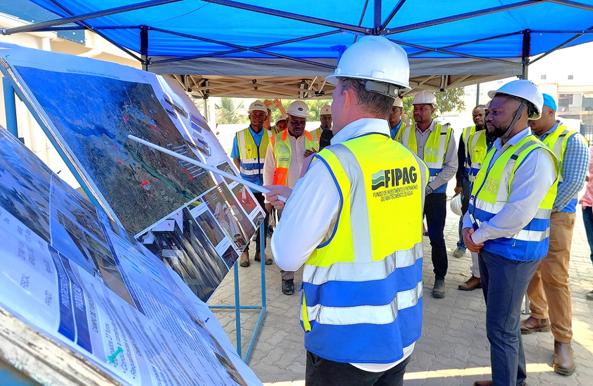
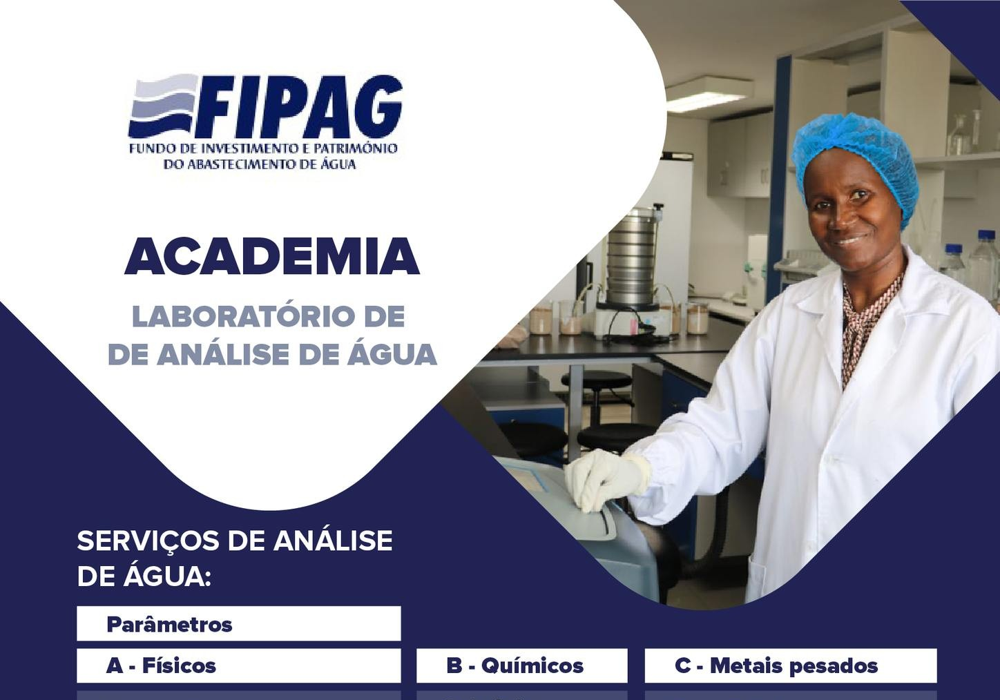
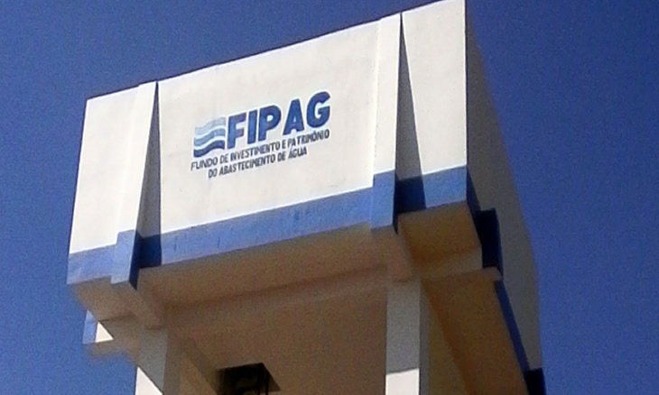
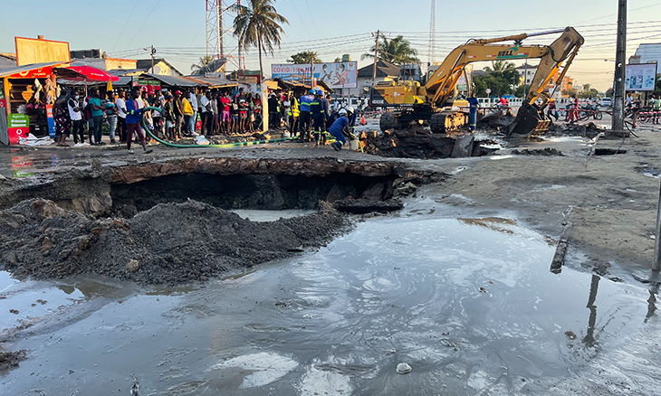
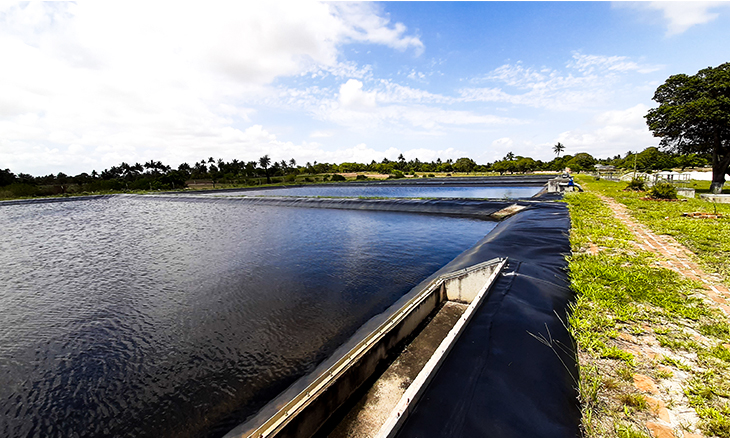
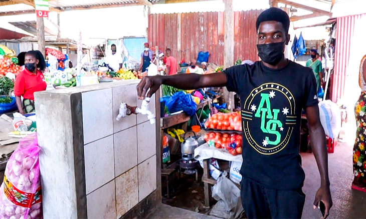
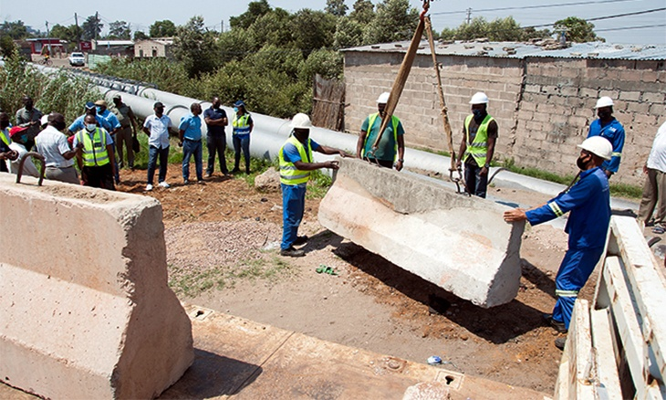

FIPAG NO PAÍS
ÚLTIMAS NOTÍCIAS

Boane: FIPAG assume gestão dos sistemas locais de abastecimento de água

FIPAG inaugura academia de formação profissional

FIPAG restringe abastecimento de água em Nampula

Avaria de tubagem de água prejudica 13 mil pessoas em Quelimane

FIPAG perde mais de 900 mil metros cúbicos de água por ano
Água salobra leva FIPAG a “isolar” dois furos em Nampula

FIPAG corta água aos mercados de Inhambane por Município dever 2 milhões

FIPAG coloca barreiras de betão armado para a protecção de condutas adutoras de água de alta pressão